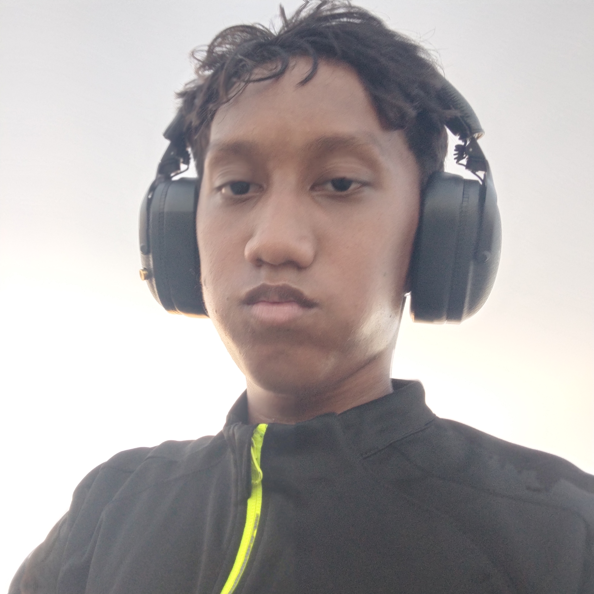

Jhairelle Dwayne A.Fonte
Personal Information
My Name is Jhairelle Dwayne A.Fonte.
I am a Grade 11 ICT student.
My birthday is on June 23.

This image represents me.
About Me
I always will improve my coding and programing skills because I want to become a
successful programmer oneday.
My Hobbies and Interests
These are some of the hobbies and interests that describe me:
- online and video games
- Playing instrumnet
- Singing
- Playing sports
This video is related to anime song
My Top 5 Favorite Foods
Below are my top five favorite foods:
- Cokkies
- Candys
- Steak
- Pancake
- Yogurt
My Favorite Things
I like to play instruments, I love the color black, and I love
love cats and dogs.
This audio represents one of my favorite songs.
My Educational Goals
- Improve coding and programing skills.
- Learn more about programing.
- Graduate from Senior High School with good grades.
- do my very best.
My Daily Routine
- Wake up and prepare.
- Attend my classes and participate in lessons.
- Complete my assignments and projects.
- study the lessons.
- Relax by playing valorant, singing, or playing drums.
- Sleep early to prepare and repeat.
My Countdown to Success
- successful programmer.
- Finish college successfully.
- Graduate from High School.
My Dream Career
My dream career is to become a professional programer or
game Developer.I want to help people with my programing skill
Fun Facts About Me
I love helping others and having fun with life and enjoying it
My Personal Motto
"believe in yourself even if onone does."
End of Profile
Thank you for reading my personal profile!